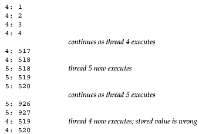

| [ Team LiB ] |
|
26.7 Mutexes: Mutual ExclusionNotice in Figure 26.14 that when a thread terminates, the main loop decrements both nconn and nlefttoread. We could have placed these two decrements in the function do_get_read, letting each thread decrement these two counters immediately before the thread terminates. But this would be a subtle, yet significant, concurrent programming error. The problem with placing the code in the function that each thread executes is that these two variables are global, not thread-specific. If one thread is in the middle of decrementing a variable, that thread is suspended, and if another thread executes and decrements the same variable, an error can result. For example, assume that the C compiler turns the decrement operator into three instructions: load from memory into a register, decrement the register, and store from the register into memory. Consider the following possible scenario:
The end result is that nconn is 2 when it should be 1. This is wrong. These types of concurrent programming errors are hard to find for numerous reasons. First, they occur rarely. Nevertheless, it is an error and it will fail (Murphy's Law). Second, the error is hard to duplicate since it depends on the nondeterministic timing of many events. Lastly, on some systems, the hardware instructions might be atomic; that is, there might be a hardware instruction to decrement an integer in memory (instead of the three-instruction sequence we assumed above) and the hardware cannot be interrupted during this instruction. But, this is not guaranteed by all systems, so the code works on one system but not on another. We call threads programming concurrent programming, or parallel programming, since multiple threads can be running concurrently (in parallel), accessing the same variables. While the error scenario we just discussed assumes a single-CPU system, the potential for error also exists if threads A and B are running at the same time on different CPUs on a multiprocessor system. With normal Unix programming, we do not encounter these concurrent programming problems because with fork, nothing besides descriptors is shared between the parent and child. We will, however, encounter this same type of problem when we discuss shared memory between processes. We can easily demonstrate this problem with threads. Figure 26.17 is a simple program that creates two threads and then has each thread increment a global variable 5,000 times. We exacerbate the potential for a problem by fetching the current value of counter, printing the new value, and then storing the new value. If we run this program, we have the output shown in Figure 26.16. Figure 26.16. Output from program in Figure 26.17. Figure 26.17 Two threads that increment a global variable incorrectly.threads/example01.c
1 #include "unpthread.h"
2 #define NLOOP 5000
3 int counter; /* incremented by threads */
4 void *doit(void *);
5 int
6 main(int argc, char **argv)
7 {
8 pthread_t tidA, tidB;
9 Pthread_create(&tidA, NULL, &doit, NULL);
10 Pthread_create(&tidB, NULL, &doit, NULL);
11 /* wait for both threads to terminate */
12 Pthread_join(tidA, NULL);
13 Pthread_join(tidB, NULL);
14 exit(0);
15 }
16 void *
17 doit(void *vptr)
18 {
19 int i, val;
20 /*
21 * Each thread fetches, prints, and increments the counter NLOOP times.
22 * The value of the counter should increase monotonically.
23 */
24 for (i = 0; i < NLOOP; i++) {
25 val = counter;
26 printf("%d: %d\n", pthread_self(), val + 1);
27 counter = val + 1;
28 }
29 return (NULL);
30 }
Notice the error the first time the system switches from thread 4 to thread 5: The value 518 is stored by each thread. This happens numerous times through the 10,000 lines of output. The nondeterministic nature of this type of problem is also evident if we run the program a few times: Each time, the end result is different from the previous run of the program. Also, if we redirect the output to a disk file, sometimes the error does not occur since the program runs faster, providing fewer opportunities to switch between the threads. The greatest number of errors occurs when we run the program interactively, writing the output to the (slow) terminal, but saving the output in a file using the Unix script program (discussed in detail in Chapter 19 of APUE). The problem we just discussed, multiple threads updating a shared variable, is the simplest problem. The solution is to protect the shared variable with a mutex (which stands for "mutual exclusion") and access the variable only when we hold the mutex. In terms of Pthreads, a mutex is a variable of type pthread_mutex_t. We lock and unlock a mutex using the following two functions:
If we try to lock a mutex that is already locked by some other thread, we are blocked until the mutex is unlocked. If a mutex variable is statically allocated, we must initialize it to the constant PTHREAD_MUTEX_INITIALIZER. We will see in Section 30.8 that if we allocate a mutex in shared memory, we must initialize it at runtime by calling the pthread_mutex_init function.
Figure 26.18 is a corrected version of Figure 26.17 that uses a single mutex to lock the counter between the two threads. Figure 26.18 Corrected version of Figure 26.17 using a mutex to protect the shared variable.threads/example02.c
1 #include "unpthread.h"
2 #define NLOOP 5000
3 int counter; /* incremented by threads */
4 pthread_mutex_t counter_mutex = PTHREAD_MUTEX_INITIALIZER;
5 void *doit(void *);
6 int
7 main(int argc, char **argv)
8 {
9 pthread_t tidA, tidB;
10 Pthread_create(&tidA, NULL, &doit, NULL);
11 Pthread_create(&tidB, NULL, &doit, NULL);
12 /* wait for both threads to terminate */
13 Pthread_join(tidA, NULL);
14 Pthread_join(tidB, NULL);
15 exit(0);
16 }
17 void *
18 doit(void *vptr)
19 {
20 int i, val;
21 /*
22 * Each thread fetches, prints, and increments the counter NLOOP times.
23 * The value of the counter should increase monotonically.
24 */
25 for (i = 0; i < NLOOP; i++) {
26 Pthread_mutex_lock(&counter_mutex);
27 val = counter;
28 printf("%d: %d\n", pthread_self(), val + 1);
29 counter = val + 1;
30 Pthread_mutex_unlock(&counter_mutex);
31 }
32 return (NULL);
33 }
We declare a mutex named counter_mutex and this mutex must be locked by the thread before the thread manipulates the counter variable. When we run this program, the output is always correct: The value is incremented monotonically and the final value printed is always 10,000. How much overhead is involved with mutex locking? The programs in Figures 26.17 and 26.18 were changed to loop 50,000 times and were timed while the output was directed to /dev/null. The difference in CPU time from the incorrect version with no mutex to the correct version that used a mutex was 10%. This tells us that mutex locking is not a large overhead. |
| [ Team LiB ] |
|